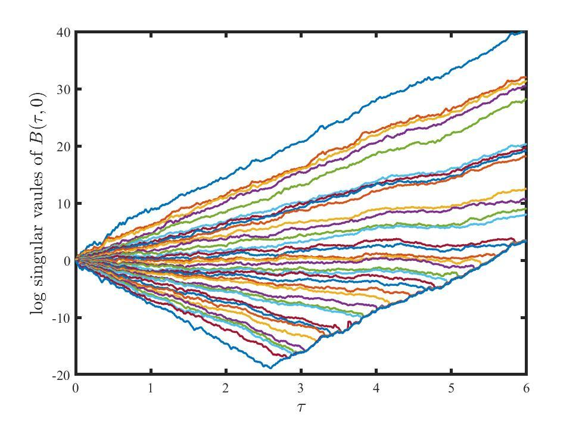

由于每次更新格林函数都是在原有格林函数的基础上进行累积更新，并且需要在不同虚时上进行传递，数值误差的积累会越来越大。格林函数的计算涉及到的是矩阵运算，其数值误差增长的快慢与 B 矩阵的范数有关。一个矩阵的范数指的是最大奇异值和最小奇异值的比值，对于无相互作用系统， B矩阵的范数就是exp(βW)，其中W为能带最高与最低能量之差，即带宽。而对于相互作用体系，一般来说，β越大，相互作用强度越大， B矩阵的范数就越大，这点我们在数值计算中已经验证过。
在大 U或是β很大的时候，计算格林函数就会有很大的数值稳定的问题，其原因在于…各矩阵的范数/condition number过大，在矩阵相乘的时候，大的和小的scale混在一起。我们有很多已经被证明是weakly backward stable的算法
对于格林函数的求解，等价为解线性方程组：
\[ \left(I_{n}+B_{L} \cdots B_{2} B_{1}\right) x=b \]我们定义condition number为矩阵和矩阵的逆的范数的乘积：
\[ \kappa\left(I_{n}+B_{L} \cdots B_{2} B_{1}\right) \equiv\left\|I_{n}+B_{L} \cdots B_{2} B_{1}\right\| \|\left(I_{n}+B_{L} \cdots B_{2} B_{1}\right)^{-1} \]该量大概的和矩阵最大奇异值与最小奇异值的比值有关，与矩阵乘法误差的上界有关。
因为condition number过大，所以我们得到的解的相对误差：
\[ \frac{\|\tilde{x}-x\|}{\|x\|}=\mathcal{O}\left(\epsilon_{\mathrm{m}} \kappa\left(I_{n}+B_{L} \cdots B_{2} B_{1}\right)\right) \]会非常大。其中 \(\epsilon_{\mathrm{m}}\) 是机器的unit round off 误差，IEEE单精度是 \(\epsilon_{\mathrm{m}}=2^{-24}\) ，IEEE双精度是 \(2^{-53}\) 。某些情况下 \(\epsilon_{\mathrm{m}} \kappa\left(I_{n}+B_{L} \cdots B_{2} B_{1}\right)\) 很容易就比1还大，这意味着你的解可能一位有效的都没有。
数值稳定的具体操作如下。
先回忆一下定义：
\[ \mathbf{B}^{\sigma}\left(l_{2} \Delta \tau, l_{1} \Delta \tau\right)=\prod_{l=l_{1}+1}^{l_{2}} e^{\pm \alpha \operatorname{Diag}\left(\vec{S}_{l}\right)} e^{-\Delta \tau T} \]其中 ±对应自旋上下， \(\cosh (\alpha)=e^{\Delta \tau U / 2}\) ， \(\operatorname{Diag}\left(\vec{S}_{l}\right)\) 表示对角元分别为 \(s_{i, l}=\pm 1\) 的矩阵，T为只在最近邻处有矩阵元−t的矩阵。
为了避免数值稳定的问题，我们不妨每隔 \(\tau_1\) 做一次数值稳定， \(\tau_1\) 的选取使得 \(B_{C}\left(n \tau_{1},(n-1) \tau_{1}\right)\) 不超过机器精度。而 \(B_{C}(\tau, 0)=B_{C}\left(n \tau_{1},(n-1) \tau_{1}\right) \cdots B_{C}\left(\tau_{1}, 0\right)\) ，我们做数值稳定的第一步是得到 \(B_{C}(\tau, 0)\) 或 \(B_{C}(\beta,\tau)\) 的对应的UDV矩阵（注意，不是直接对这些矩阵进行奇异值分解），以n=3为例子：
\[ B_{C}\left(2 \tau_{1}, \tau_{1}\right) \underbrace{B_{C}\left(\tau_{1}, 0\right)}_{U_{1} D_{1} V_{1}}=\underbrace{\left(\left(B_{C}\left(2 \tau_{1}, \tau_{1}\right) U_{1}\right) D_{1}\right)}_{U_{2} D_{2} V} V_{1}=U_{2} D_{2} V_{2} \]通过如此的方法，我们能得到 \(B_{C}(\tau, 0)=U_{R} D_{R} V_{R}\) ，类似的，对于 \(B_{C}(\beta, \tau)\) ，同样的有 \(B_{C}(\beta, \tau)=V_{L} D_{L} U_{L}\) （注意之前是UDV，现在是VDU，之前是从右往左逐步做奇异值分解得到，现在是从左往右）。
实际上经常选择做 modified Gram-Schmidt (MGS)。其中 U是正交的，D是对角的，V是单位上三角阵。总之，我们的目的是，希望U和V的性质都很好（这样的矩阵，矩阵乘法的性质很好），只有D矩阵的condition number很大。或者QR分解/LQ分解。
事实上，如果不进行逐步的SVD，或者是使用某些算法实现的SVD，可以看到数值不稳定的迹象之一： \(B(\tau,0)\) 所得到的包含奇异值的各个D矩阵，即所对应的奇异值，在τ很大的时候，会有奇异的现象如图（arXiv:2003.05286），即较小的奇异值会上升且数值变的相同（如图为U=6,L=6,Δτ=0.01，使用matlab自带的svd函数进行数值稳定的结果）：

在此基础上，有诸多方法计算格林函数：
方法一
已知：
\[ \left(\begin{array}{cc} A & B \\ C & D \end{array}\right)^{-1}=\left(\begin{array}{cc} \left(A-B D^{-1} C\right)^{-1} &\left(C-D B^{-1} A\right)^{-1} \\ \left(B-A C^{-1} D\right)^{-1} &\left(D-C A^{-1} B\right)^{-1} \end{array}\right) \]且有：
\[ \begin{array}{c} \left(\begin{array}{cc} I & B_{C}(\beta, \tau) \\ -B_{C}(\tau, 0) & I \end{array}\right)^{-1}= \left(\begin{array}{cc} G_{C}(0,0) & G_{C}(0,\tau) \\ G_{C}(\tau,0) & G_{C}(\tau,\tau) \end{array}\right) \end{array} \]则：
\[ \begin{aligned} &\left(\begin{array}{cc} I & V_{L} D_{L} U_{L} \\ -U_{R} D_{R} V_{R} & I \end{array}\right)^{-1}=\\ &\left[\left(\begin{array}{cc} V_{L} & 0 \\ 0 & U_{R} \end{array}\right) \underbrace{\left(\begin{array}{cc} \left(V_{R} V_{L}\right)^{-1} & D_{L} \\ -D_{R} & \left(U_{L} U_{R}\right)^{-1} \end{array}\right)}_{U D V}\left(\begin{array}{cc} V_{R} & 0 \\ 0 & U_{L} \end{array}\right)\right]^{-1}=\\ &\left[\left(\begin{array}{cc} \left(V_{R}\right)^{-1} & 0 \\ 0 & \left(U_{L}\right)^{-1} \end{array}\right) V^{-1}\right] D^{-1}\left[U^{-1}\left(\begin{array}{cc} \left(V_{L}\right)^{-1} & 0 \\ 0 & \left(U_{R}\right)^{-1} \end{array}\right)\right] \end{aligned} \]得到的矩阵的右下角即为 \(G(\tau,\tau)\)
方法二
\[ \begin{aligned} G(\tau,\tau)=&\left(1+B_{C}(\tau, 0) B_{C}(\beta, \tau)\right)^{-1}\\ =&\left(1+U_{R} D_{R} V_{R} V_{L} D_{L} U_{L}\right)^{-1} \\ =&\left(U_{L}\right)^{-1} \underbrace{\left(\left(U_{L} U_{R}\right)^{-1}+D_{R}\left(V_{R} V_{L}\right) D_{L}\right.}_{U D V})^{-1} U_{R}^{-1}\\ =&\left(V U_{L}\right)^{-1} D^{-1}\left(U_{R} U^{-1}\right) \end{aligned} \]方法三
此方法为我们实际上用的方法（分为用QR分解的和SVD分解（或modified Gram-Schmidt (MGS) factorization）的等等）：
SVD（或modified Gram-Schmidt (MGS)factorization）
\[ \begin{aligned} G(\tau, \tau) &=[1+B(\tau, 0) B(\beta, \tau)]^{-1} \\ &=\left[1+U_{R} D_{R} V_{R} V_{L} D_{L} U_{L}\right]^{-1} \\ &=U_{L}^{-1}\left[\left(U_{L} U_{R}\right)^{-1}+D_{R}\left(V_{R} V_{L}\right) D_{L}\right]^{-1} U_{R}^{-1} \\ &=U_{L}^{-1}\left[\left(U_{L} U_{R}\right)^{-1}+D_{R}^{\max } D_{R}^{\min }\left(V_{R} V_{L}\right) D_{L}^{\min } D_{L}^{\max }\right]^{-1} U_{R}^{-1} \\ &=U_{L}^{-1}\left(D_{L}^{\max }\right)^{-1}\left[\left(D_{R}^{\max }\right)^{-1}\left(U_{L} U_{R}\right)^{-1}\left(D_{L}^{\max }\right)^{-1}+D_{R}^{\min } V_{R} V_{L} D_{L}^{\min }\right]^{-1}\left(D_{R}^{\max }\right)^{-1} U_{R}^{-1} \end{aligned} \]第三个等号White等人当年也这么建议。
上式其中： \(D_{L}^{\max }(i,i)= \max \left\{ D_{L}(i,i),1 \right\}\)
类似的，有：
\[ \begin{aligned} G(\tau, 0) &=G(\tau, \tau) B(\tau, 0) \\ &=[1+B(\tau, 0) B(\beta, \tau)]^{-1} B(\tau, 0) \\ &=\left[1+U_{R} D_{R} V_{R} V_{L} D_{L} U_{L}\right]^{-1} U_{R} D_{R} V_{R} \\ &=U_{L}^{-1}\left[D_{R}^{-1} U_{R}^{-1} U_{L}^{-1}+V_{R} V_{L} D_{L}\right]^{-1} V_{R} \\ &=U_{L}^{-1}\left[\left(D_{R}^{\max } D_{R}^{\min }\right)^{-1} U_{R}^{-1} U_{L}^{-1}+V_{R} V_{L}\left(D_{L}^{\min } D_{R}^{\max }\right)\right]^{-1} V_{R} \\ &=U_{L}^{-1}\left(D_{L}^{\max }\right)^{-1}\left[\left(D_{R}^{\max }\right)^{-1}\left(U_{L} U_{R}\right)^{-1}\left(D_{L}^{\max }\right)^{-1}+D_{R}^{\min } V_{R} V_{L} D_{L}^{\min }\right]^{-1} D_{R}^{\min } V_{R} \end{aligned} \]以及：
\[ \begin{aligned} G(0,0) &=[1+B(\beta, 0)]^{-1} \\ &=[1+B(\beta, \tau) B(\tau, 0)]^{-1} \\ &=\left[1+V_{L} D_{L} U_{L} U_{R} D_{R} V_{R}\right]^{-1} \\ &=V_{R}^{-1}\left[\left(V_{R} V_{L}\right)^{-1}+D_{L}\left(U_{L} U_{R}\right) D_{R}\right]^{-1} V_{L}^{-1} \\ &=V_{R}^{-1}\left[\left(V_{R} V_{L}\right)^{-1}+D_{L}^{\max } D_{L}^{\min }\left(U_{L} U_{R}\right) D_{R}^{\min } D_{R}^{\max }\right]^{-1} V_{L}^{-1} \\ &=V_{R}^{-1}\left(D_{R}^{\max }\right)^{-1}\left[\left(D_{L}^{\max }\right)^{-1}\left(V_{R} V_{L}\right)^{-1}\left(D_{R}^{\max }\right)^{-1}+D_{L}^{\min }\left(U_{L} U_{R}\right) D_{R}^{\min }\right]^{-1}\left(D_{L}^{\max }\right)^{-1} V_{L}^{-1} \end{aligned} \]还有：
\[ \begin{aligned} G(0, \tau) &=-B^{-1}(\tau, 0)(1-G(\tau, \tau)) \\ &=-B^{-1}(\tau, 0) B(\tau, 0)[1+B(\beta, 0)]^{-1} B(\beta, \tau) \\ &=-[1+B(\beta, 0)]^{-1} B(\beta, \tau) \\ &=-\left[1+V_{L} D_{L} U_{L} U_{R} D_{R} V_{R}\right]^{-1} V_{L} D_{L} U_{L} \\ &=-V_{R}^{-1}\left[D_{L}^{-1} V_{L}^{-1} V_{R}^{-1}+U_{L} U_{R} D_{R}\right]^{-1} U_{L} \\ &=-V_{R}^{-1}\left(D_{R}^{\max }\right)^{-1}\left[\left(D_{L}^{\max }\right)^{-1}\left(V_{R} V_{L}\right)^{-1}\left(D_{R}^{\max }\right)^{-1}+D_{L}^{\min }\left(U_{L} U_{R}\right) D_{R}^{\min }\right]^{-1} D_{L}^{\min } U_{L} \end{aligned} \]QR
\[ \begin{aligned} G(\tau, \tau) &=[1+B(\tau, 0) B(\beta, \tau)]^{-1} \\ &=\left[1+Q_{R} D_{R} T_{R} T_{L} D_{L} Q_{L}\right]^{-1} \\ &=Q_{L}^{-1}\left[\left(Q_{L} Q_{R}\right)^{-1}+D_{R} T_{R} T_{L} D_{L}\right]^{-1} Q_{R}^{-1} \\ &=Q_{L}^{-1}\left[\left(Q_{L} Q_{R}\right)^{-1}+D_{R}^{\max } D_{R}^{\min } T_{R} T_{L} D_{L}^{\min } D_{L}^{\max }\right]^{-1} Q_{R}^{-1} \\ &=Q_{L}^{-1}\left(D_{L}^{\max }\right)^{-1}\left[\left(D_{R}^{\max }\right)^{-1}\left(Q_{L} Q_{R}\right)^{-1}\left(D_{L}^{\max }\right)^{-1}+D_{R}^{\min } T_{R} T_{L} D_{L}^{\min }\right]^{-1}\left(D_{R}^{\max }\right)^{-1} Q_{R}^{-1} \end{aligned} \]其余情况不再举例。
总之总之，我们希望做的事情就是尽可能的将大的scale和小的scale分离，仅仅在最后才将他们mix在一起。
大致流程
在代码中，我们实际只需要一套UDV的变量存在，在更新到第 τ层时，我们分别有一半的 \(U_{R} D_{R} V_{R}\) 和一半的 \(V_{L} D_{L} U_{L}\) 。注意到等时格林函数需要的是两边的B(τ,0)和B(β,τ)的UDV矩阵。
比如最初先得到所有的 B(τ,0)对应的UDV矩阵。然后从第β层逐层更新辅助场，则只需要逐步的得到到第τ层为止的B(β,τ)所对应的VDU矩阵即可。
符号问题
我们知道，在进行量子系统的模拟时，我们实际上将其转化为了经典的概率分布，来进行蒙卡的采样。而实际上对于行列式蒙卡来说，各个辅助场构型所对应的权重为某个矩阵的行列式，如果没有任何限制，一个行列式的值自然可能是负数甚至是复数，如果对应的权重不是正的实数，如此我们就无法进行马尔科夫蒙特卡洛的计算（因为权重比和我们的接受概率有关，一个负的或复的接受概率，我们无法继续进行计算）。
值得注意的是，此处符号问题的产生decouple的方式有关，同样的也和计算是basis的选取有关（显然如果选取能量的本征态，就没有符号问题）。
下面简单介绍两类，对于部分情况下，没有符号问题的证明：
情况一
如果一个系统有着反幺正对称性存在，则系统没有符号问题。
反幺正变换的性质见附录
具体的表述为，如果存在一个反幺正变换 \(\mathcal{K}\) ，使得：
\[ \begin{aligned} \mathcal{K} T \mathcal{K}^{\dagger} &=T \\ \mathcal{K} V(\mathcal{C}) \mathcal{K}^{\dagger} &=V(\mathcal{C}) \\ \mathcal{K}^{2} &=-1 \end{aligned} \]则费米子部分的权重相关的矩阵 \(1+B_{C}(\beta, 0)\) 的本征值成对出现（即有本征值 \(\lambda_i\) ，则相应的有对应的另一个本征值，其共轭 \(\lambda_i^{*}\) ），即 \(\det \left( 1+B_{C}(\beta, 0) \right) =\prod_i |\lambda_i|^2\) 。上式其中T和V(s)分别为动能项和decouple之后的相互作用项。
对于权重对应矩阵 \(1+B_{C}(\beta, 0)\) ，假设有本征值λ，对应本征向量为V，我们有：
\[ \left(1+B_{C}(\beta, 0)\right) \mathcal{V}=\lambda \mathcal{V} \]因为有 \(\mathcal{K}(1+B(\beta, 0)) \mathcal{K}^{\dagger}=(1+B(\beta, 0))\)，则：
\[ (1+B(\beta, 0)) \mathcal{K} \mathcal{V}=\mathcal{K}(1+B(\beta, 0)) \mathcal{K}^{\dagger} \mathcal{K} \mathcal{V}=\lambda^{*} \mathcal{K} \mathcal{V} \]显然 \(\lambda^{*}\) 也为其本征值。由反幺正变换的性质，我们有：
\[ (\mathcal{V}, \mathcal{K} \mathcal{V})=\langle\mathcal{V}|\mathcal{K}| \mathcal{V}\rangle=\left\langle\mathcal{V}\left|\mathcal{K}^{\dagger} \mathcal{K} \mathcal{K}\right| \mathcal{V}\right\rangle^{*}=-\left\langle\mathcal{V}\left|\mathcal{K}^{\dagger}\right| \mathcal{V}\right\rangle^{*}=-(\mathcal{K} \mathcal{V}, \mathcal{V})^{*}=-(\mathcal{V}, \mathcal{K} \mathcal{V}) \]我们知道 \(\mathcal{V}\) 和 \(\mathcal{K} \mathcal{V}\) 是正交的，即 \(\lambda\) 和 \(\lambda^{*}\) 是不同本征向量所对应的本征值。
而对于如下的哈密顿量：
\[ \left\{\begin{aligned} H_{\text {fermion }} &=-t \sum_{\langle i j\rangle \sigma \lambda} \hat{c}_{i \lambda \sigma}^{\dagger} \hat{c}_{j \lambda \sigma}+\text {h.c.}-\mu \sum_{i \sigma \lambda} \hat{n}_{i \lambda \sigma} \\ H_{\text {spin}} &=-J \sum_{\langle i j\rangle} \hat{s}_{i}^{z} \hat{s}_{j}^{z}-h_{x} \sum_{i} \hat{s}_{i}^{x} \\ H_{f-s} &=-\xi \sum_{i} s_{i}^{z}\left(\hat{c}_{i}^{\dagger} \tau_{z} \sigma_{z} \hat{c}_{i}\right)=-\xi \sum_{i} s_{i}^{z}\left(\hat{\sigma}_{i 1}^{z}-\hat{\sigma}_{i 2}^{z}\right) \end{aligned}\right. \]我们注意到上的部分在反幺正变换下，变成下的部分：
\[ \begin{aligned} \hat{h}_{\uparrow} \quad=& \Delta \tau \cdot t \sum_{\langle i j\rangle \lambda} \hat{c}_{i \lambda \uparrow}^{\dagger} \hat{c}_{j \lambda \uparrow}+h . c .+\Delta \tau \cdot \mu \sum_{i \lambda} \hat{n}_{i \lambda \uparrow}+\Delta \tau \cdot \xi \sum_{i} s_{i}^{z}\left(\hat{n}_{i 1 \uparrow}-\hat{n}_{i 2 \uparrow}\right) / 2 \\ \stackrel{\mathcal{T}}{\longrightarrow} & \Delta \tau \cdot t \sum_{\langle i j\rangle \lambda} \hat{c}_{i \lambda \downarrow}^{\dagger} \hat{c}_{j \lambda \downarrow}+\text { h.c. }+\Delta \tau \cdot \mu \sum_{i \lambda} \hat{n}_{i \lambda \downarrow}+\Delta \tau \cdot \xi \sum_{i} s_{i}^{z}\left(\hat{n}_{i 1 \downarrow}-\hat{n}_{i 2 \downarrow}\right) / 2 \\ \stackrel{\tau_{x} \text { on orbital space }}{\longrightarrow} & \Delta \tau \cdot t \sum_{\langle i j\rangle \lambda} \hat{c}_{i \lambda \downarrow}^{\dagger} \hat{c}_{j \lambda \downarrow}+\text { h.c. }+\Delta \tau \cdot \mu \sum_{i \lambda} \hat{n}_{i \lambda \downarrow}+\Delta \tau \cdot \xi \sum_{i} s_{i}^{z}\left(\hat{n}_{i 2 \downarrow}-\hat{n}_{i 1 \downarrow}\right) / 2 \\ & \hat{h}_{\downarrow} \end{aligned} \]则下的部分的权重与上的部分互相共轭，实际只需要算上部分的权重（比），不需要再计算下部分的权重（比）。
情况二
而对于诸如Hubbard model，情况略有不同。比如我们只能算U>0的半满的情况，是因为我们有着诸如下面的幺正的Particle-hole变换（仅在bipartite lattice是well-defined的）保证的：
\[ \left\{\begin{array}{l} c_{i \downarrow}^{\dagger} \rightarrow(-1)^{i} c_{i \downarrow} \\ c_{i \downarrow} \rightarrow(-1)^{i} c_{i \downarrow}^{\dagger} \end{array}\right. \]hopping项不变，而对于decouple到不同channel的部分：
\[ \text {$S_z$ Channel $\alpha$ 是实的} \rightarrow\left\{\begin{array}{c} \alpha\left(n_{i \uparrow}-n_{i \downarrow}\right)\stackrel{P H \text { for spin-down }}{\longrightarrow} \alpha s_{i}\left(n_{i \uparrow}+n_{i \downarrow}-1\right) \\ e^{\alpha s_{i}\left(n_{i \uparrow}-n_{i \downarrow}\right)} \stackrel{P H \text { for spin-down }}{\longrightarrow} e^{\alpha s_{i}\left(n_{i \uparrow}+n_{i \downarrow}-1\right)} \end{array}\right. \]\(S_z\) Channel \(\alpha\) 是实的，单看变换前的结果，是看不出是否有负符号问题存在的。而在Particle-hole变换之后，我们看到对于自旋上和下是相同的，最终权重应该是上的部分的平方，在乘上一个实的exp型的因子，所以自然没有负符号问题（所有矩阵元素都是实的就更不会有复符号问题了）。
\[ \text {CDW Channel $\alpha$ 是虚的} \rightarrow\left\{\begin{array}{c} \alpha\left(n_{i \uparrow}+n_{i \downarrow}-1\right)\stackrel{P H \text { for spin-down }}{\longrightarrow} \alpha s_{i}\left(n_{i \uparrow}-n_{i \downarrow}\right) \\ e^{\alpha s_{i}\left(n_{i \uparrow}+n_{i \downarrow}-1\right)} \stackrel{P H \text { for spin-down }}{\longrightarrow} e^{\alpha s_{i}\left(n_{i \uparrow}-n_{i \downarrow}\right)} \end{array}\right. \]是虚的，单看变换前的结果，是看不出是否有复符号问题存在的。而在幺正的Particle-hole变换之后，权重的值是不变的。我们看到对于自旋上和下的各矩阵元素都是互相复共轭的，Particle-hole变换之后权重为正的实数，权重自然为正的实数。